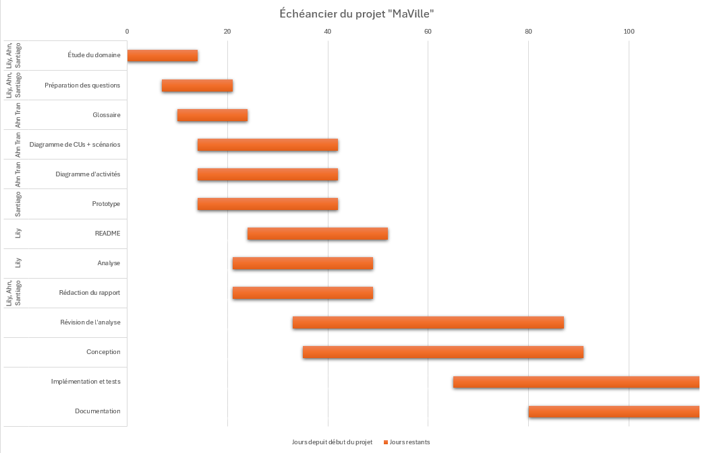
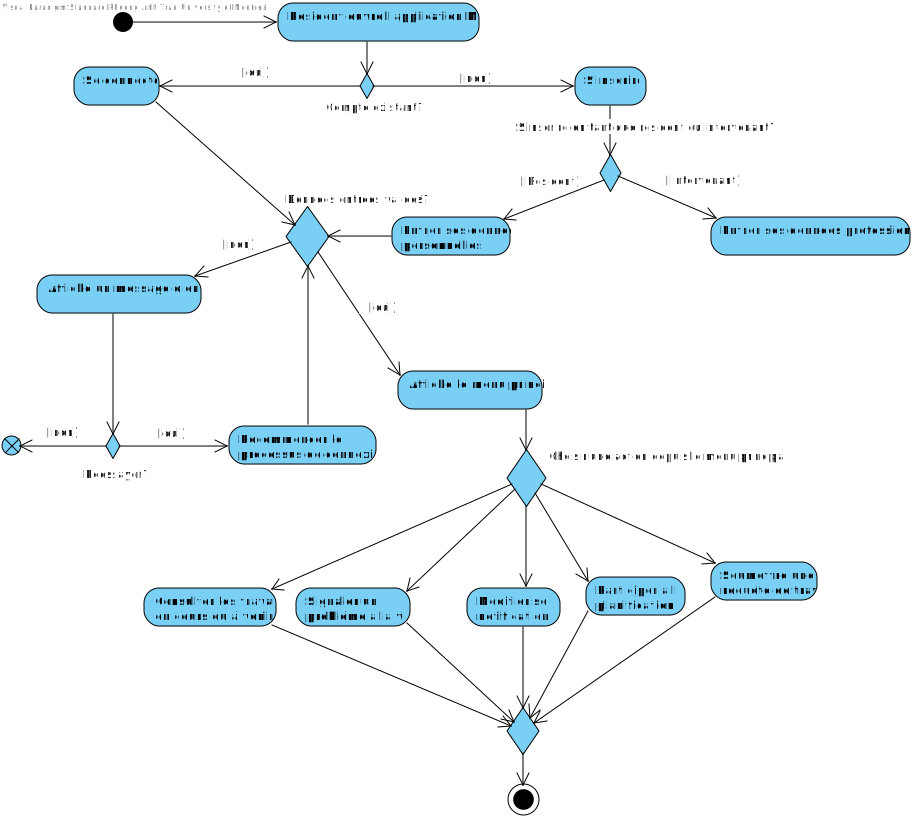
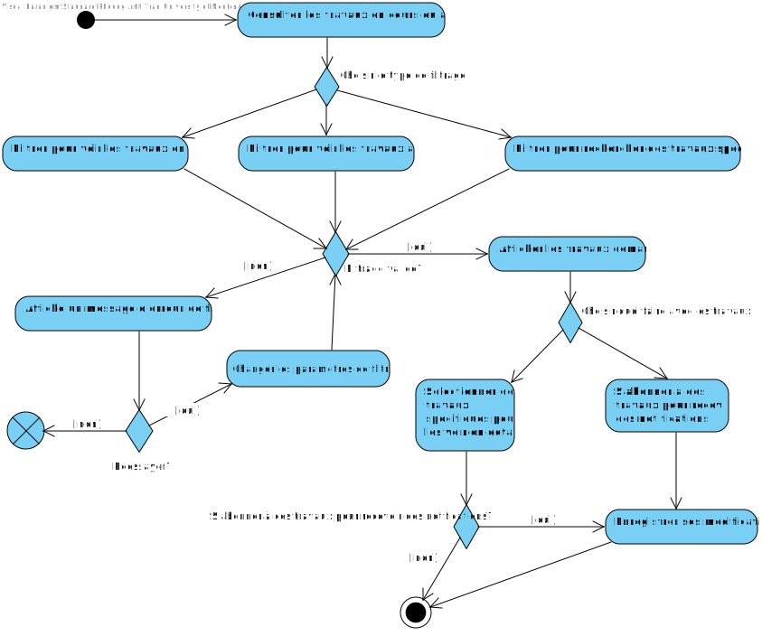
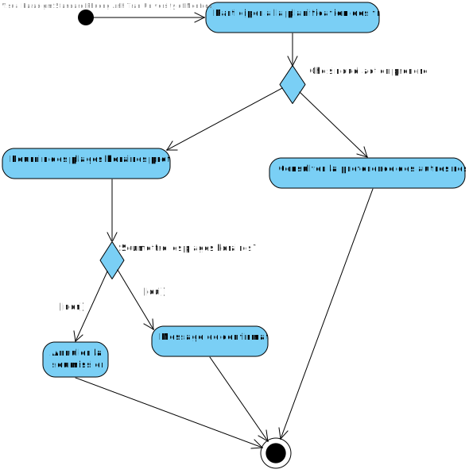
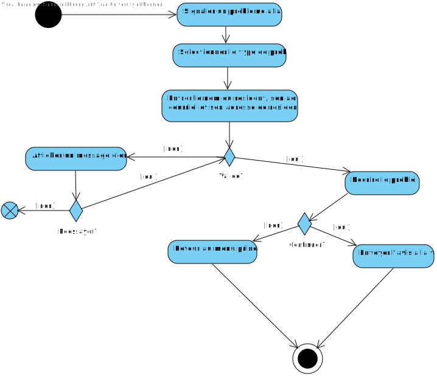
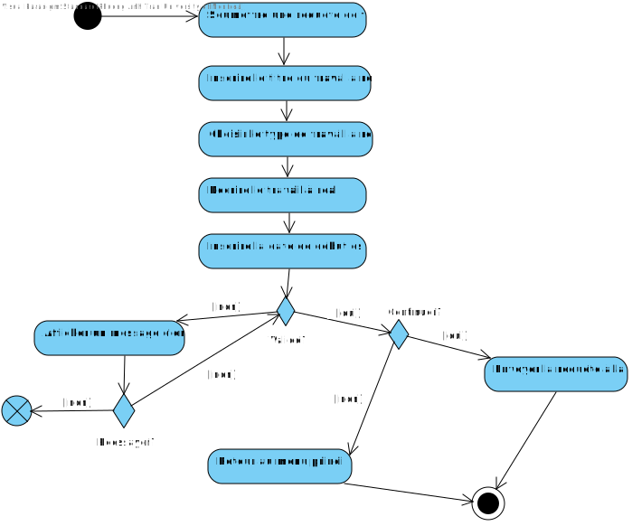

Cadre du projet
Introduction
Présentement, les résidents de Montréal peuvent voir sur le site “Info entraves et travaux” les projets qui ont couramment lieu dans leur ville.
Malgré cela, les résidents ne sont pas satisfaits du site et souhaitent avoir une mise à niveau de celui-ci.
En effet, il ne semble pas y avoir une participation active du côté résident comme du côté intervenant, menant à des embouteillages et fermetures de route.
Une amélioration globale du site actuel pour mieux répondre aux exigences des clients et intervenants est donc cruciale.
Par exemple, avoir l’option de s’inscrire comme résident ou intervenant, être capable de rechercher ou consulter des travaux,
déposer ou consulter des requêtes de travail, recevoir des notifications des projets, mettre à jour des informations, et signaler des problèmes à la ville.
En résumé, une expérience plus participative.
Échéancier

Exigences
Après de nombreuses rencontres avec le client et une familiarisation avec les activités liées aux travaux publics et à la gestion urbaine, nous avons préparé un glossaire rassemblant les termes et expressions clés caractérisant l'environnement de travaux à Montréal.
Glossaire
- Application MaVille
- Application facilitant la communication et la gestion des travaux publics et privés dans la ville, permettant aux résidents et intervenants de consulter, soumettre, et organiser les projets afin de minimiser leur impact sur le quotidien des citoyens.
- Code de la Ville
- Identifiant unique associé à chaque ville dans l'application, utilisé pour structurer et gérer les projets de travaux en fonction des zones spécifiques.
- Travaux publics
- Ensemble de travaux d'infrastructure réalisés pour la ville.
- Intervenant
- Personne ou entreprise chargée de réaliser des travaux publics. Les intervenants peuvent soumettre des nouveaux projets et mettre à jour des projects en cours.
- Résident
- Citoyen qui utilise l'application pour consulter les travaux, soumettre des requêtes ou signaler des problèmes dans sa ville.
- Notification personnalisée
- Message envoyé aux résidents pour les aviser des travaux.
- Requête de travail
- Demande d'intervention spécifique soumise par un résident à un intervenant.
- Planification participative
- Processus par lequel les résidents peuvent donner leur avis sur les dates et horaires préférés pour les travaux dans leur quartier.
- Chantier
- Zone où des travaux publics ou privés sont réalisés.
- Quartier
- Subdivision géographique de la ville utilisée pour filtrer et organiser les travaux dans l'application.
- Statut du projet
- État d'avancement d'un projet de travaux, pouvant être "Prévu", "En cours", "Suspendu" ou "Terminé".
- Horaire des travaux
- Plage horaire pendant laquelle les travaux sont planifiés et réalisés, pouvant être ajustée en fonction des préférences des résidents.
- Problème
- Obstacle ou situation nécessitant une intervention, comme une entrave routière, une défaillance d'infrastructure, ou une nuisance causée par un chantier.
- Type de problème
- Catégories de problèmes pouvant survenir, telles que : entrave routière, panne d'éclairage public, nuisances sonores, ou conditions de sécurité inadéquates.
Persona
Cas d'utilisation
NOTES À PROPOS DU DIAGRAMME
Acteurs principaux: Les résidents et les intervenants utilisent l'application.
Acteur secondaire: La ville reçoit et traite les problèmes signalés et doit enregistrer les intervenants avant leur inscription.
Choix des relations:
1. Généralisation: L'intervenant est une généralisation d'un résident car il peut faire tout ce que le résident fait et plus.
2. La relation include
- Le résident doit être connecté à son compte pour pouvoir signaler un problème à la ville, rechercher des travaux et participer à la planification.
- L'intervenant doit être authentifié auprès de la ville comme intervenant pour pouvoir s'inscrire en tant qu'intervenant, consulter la liste des requêtes de travail et soumettre un nouveau projet de travail.
3. La relation extend
- Lorsqu'un résident cherche des travaux, il peut aussi filtrer les résultats pour consulter les travaux en cours ou à venir. Il peut aussi choisir de recevoir ou non des notifications pour certains travaux.
- Lorsqu'un résident participe à la planification des travaux, il peut choisir de soumettre une requête de travail. Il peut aussi consulter les travaux en cours ou à venir pour donner ses préférences concernant ces travaux. De plus, il peut choisir de recevoir ou non des notifications liées aux travaux pour lesquels il a exprimé ses préférences.
- Lorsqu'un intervenant soumet un nouveau projet de travaux, il peut consulter les préférences des résidents pour choisir une date appropriée et il peut décider de mettre à jour les information d'un chantier existant.
Scénarios
Scénario principal
- L'utilisateur ouvre l'application MaVille.
- L'utilisateur clique sur "S'inscrire".
- Le système demande des informations personnelles telles que le nom, l'adresse, le courriel et la création d'un mot de passe.
- L'utilisateur entre les informations requises.
- Le système enregistre les informations et crée un compte pour l'utilisateur.
- Le système envoie un courriel de confirmation pour valider l'adresse courriel.
- L'utilisateur valide son adresse en cliquant sur le lien dans le courriel de confirmation.
- Le système confirme que l'inscription a été effectuée avec succès et redirige l'utilisateur vers la page de connexion.
Scénarios alternatifs
Scénario principal
- Le résident ouvre l'application MaVille.
- Le résident se connecte et accède à la page de recherche des travaux.
- Le résident entre les critères de recherche tels que la date, le type de travaux, ou la rue.
- L'application affiche la liste des travaux correspondant aux critères choisis.
Scénarios alternatifs
Scénario principal
- Le résident ouvre l'application MaVille.
- Le résident se connecte et accède à la section des paramètres de notifications.
- Le résident sélectionne les types de travaux et les paramètres de notification (plages horaires, types de travaux, etc.).
- Le résident enregistre ses préférences.
- L'application envoie des notifications personnalisées au résident en fonction de ses critères choisis lorsque des travaux sont planifiés ou en cours dans son quartier.
Scénarios alternatifs
Scénario principal
- Le résident ouvre l'application MaVille.
- Le résident se connecte et accède à la section de Planification participative.
- Le résident fournit ses plages horaires préférées pour les travaux dans son quartier.
- L'application enregistre les préférences du résident et les ajoute aux données de planification.
- Une fois les travaux terminés dans le quartier du résident, l'application invite le résident à partager son avis sur les travaux réalisés.
- Le résident partage son avis sur les travaux et l'intervenant.
- L'application enregistre l'avis du résident.
Scénarios alternatifs
Scénario principal
- Le résident ouvre l'application MaVille.
- Le résident se connecte et accède à la section Soumettre une requête de travail.
- Le résident sélectionne le type de travail à réaliser.
- Le résident décrit le travail qu'il souhaite voir effectué.
- Le résident choisit la date de début espérée pour les travaux.
- Le résident soumet la requête.
- L'application confirme que la requête a été soumise avec succès.
- La ville reçoit la requête et l'ajoute à la liste des travaux à planifier.
Scénarios alternatifs
Scénario principal
- Le résident ouvre l'application MaVille.
- Le résident se connecte et accède à la section Signaler un problème à la ville.
- Le résident entre ses informations personnelles.
- Le résident sélectionne le type de problème à signaler.
- Le résident décrit le problème.
- Le résident envoit le problème.
- L'application confirme la réception du problème.
- La ville reçoit la notification du problème pour le traiter.
Scénarios alternatifs
Scénario principal
- L'intervenant ouvre l'application MaVille.
- L'intervenant accède à la page d'inscription.
- L'intervenant entre ses informations personnelles dont son nom complet, son adresse courriel –> Mot de passe: Utilisé pour se connecter –> Type: Entreprise public, Entrepreneur privé, Particulier –> Identifiant de la ville (code à 8 chiffres)
- L'intervenant crée un mot de passe sécurisé.
- L'intervenant indique le type de son entreprise.
- L'intervenant indique son identifiant de la ville.
- L'intervenant accepte les conditions d'utilisation.
- L'application vérifie la validité des informations fournies.
- Si les informations sont valides, l'application confirme l'inscription et envoie un courriel de confirmation à l'intervenant.
- L'intervenant peut désormais se connecter à l'application et soumettre des projets de travaux.
Scénarios alternatifs
Scénario principal
- L'intervenant se connecte à l'application MaVille.
- L'intervenant accède à l'interface utilisateur où il peut voir les options disponibles.
- L'intervenant sélectionne l'option Consulter les requêtes de travail.
- L'application affiche une liste de requêtes soumises par les résidents.
- L'intervenant peut cliquer sur une requête spécifique pour voir plus de détails.
- L'intervenant peut trier ou filtrer les requêtes en fonction de critères tels que la date, l'urgence ou la localisation.
- L'intervenant examine la requête et décide s'il souhaite y répondre.
Scénarios alternatifs
Scénario principal
- L'intervenant se connecte à l'application MaVille.
- L'intervenant accède à l'interface utilisateur et sélectionne l'option Soumettre un projet de travaux.
- L'application affiche un formulaire permettant de soumettre un projet de travaux.
- L'intervenant remplit les informations requises pour le projet
- L'intervenant valide les informations saisies.
- L'application vérifie que toutes les informations obligatoires ont été fournies.
- L'application soumet le projet et confirme à l'intervenant que le projet a été soumis avec succès.
- L'intervenant reçoit une notification de confirmation ainsi qu'un récapitulatif du projet soumis.
Scénarios alternatifs
Scénario principal
- L'intervenant se connecte à l'application MaVille.
- L'intervenant accède à l'interface utilisateur et sélectionne l'option Mettre à jour les informations d'un chantier.
- L'application affiche une liste des chantiers en cours dont l'intervenant est responsable.
- L'intervenant sélectionne le chantier à mettre à jour.
- L'intervenant modifie les informations pertinentes
- L'intervenant valide les modifications.
- L'application vérifie que toutes les informations sont complètes et correctes.
- L'application enregistre les modifications et informe l'intervenant que les informations du chantier ont été mises à jour avec succès.
- Les résidents concernés reçoivent une notification concernant la mise à jour du chantier.
Scénarios alternatifs
Diagramme d'activités
Diagramme d'activités lorsque le résident ouvre l'application
Diagramme d'activités lorsque le résident consulter les travaux en cours ou à venir
Diagramme d'activités lorsque le résident participe à la planification
Diagramme d'activités lorsque le résident regarde le statut des travaux auxquels il est abonné

Diagramme d'activités lorsque le résident signale un problème à la ville
Diagramme d'activités lorsque le résident soumet une requête de travail
Analyse
Risques
- Site non disponible à cause d’une panne
Justification : s’il y a plusieurs utilisateurs qui essaient d’accéder au site, cela pourrait entraîner une surcharge, ainsi qu’une panne de service
Solution: Installation de plusieurs serveurs pour pouvoir supporter plusieurs utilisateurs (ex. Serveurs un peu partout dans la ville ; dispersés pour clients dans chaque région de la ville) - Manque de sécurité/confidentialité
Justification : il faut une bonne sécurisation du site, car les résidents vont mettre leurs adresses, numéros de téléphone et autres informations personnelles
Solution: Masquer les informations personnelles / mettre en place des mesures de sécurité (connexion protégée) - Mise à jour du site lente
Justification : si les mises à jour sont trop lentes (ex. Intervenants prennent trop de temps pour mettre des nouvelles informations), les utilisateurs pourraient être moins motivés à utiliser le site
Solution: Mettre en place une alarme intégrée dans l’application si un intervenant ne met pas à jour les échéanciers - Système de contrôle
Justification : s’il n’y a pas de vérification ou contrôle des posts des usagers, il pourrait y avoir des posts/demandes irrélevantes aux travaux (ex. Vulgarités)
Solution : implémenter un algorithme qui filtre/censure certaines requêtes lorsqu’il y en a besoin - Perdre toutes les données des utilisateurs
Justification : cyberattaques, disque dur corrompu qui perd les informations stockées
Solution: mettre en place un système de backup (cloud, mediums de backup, ex)
Besoins non-fonctionnelles
- Accessibilité facile
Justification : application doit être facile d’accès, avec une utilisation intuitive et inclusive pour tous les résidents (ex. handicapés) - Fiabilité
Justification : site doit être disponible à 99,9% du temps - Support
Justification : Au besoin, les résidents et intervenants peuvent contacter une équipe de support disponible - Esthétisme
Justification : personnalisation de la page d’accueil, esthétique du site, etc. - Performance
Justification : site fonctionne et charge rapidement, pour améliorer l’expérience utilisateur
Besoins matériels
Déterminer le nombre de serveurs requis, pour redondance (si un des serveurs ne fonctionne plus), afin de stocker les informations, qui sont assez rapides/puissants pour plusieurs connexions simultanée et une bonne performance.
Une connexion internet rapide (réseaux) est aussi essentielle.
Solution de stockage
Pour stocker toutes les informations, on utilisera des bases de données situées dans le cloud.
Pour cela, on peut utiliser un des services offerts par différentes compagnies, comme AWS, Google Cloud, et autres.
Solution d'intégration
Identifier et utiliser des services AWS (ex. utilisation pare-feu, APIs, mise à jour API)
Prototype
Afin d'exécuter et de tester le prototype il suffit simplement de run le fichier App.jar dans le terminal avec la commande "java -jar App.jar"
Voici les deux utilisateurs fictifs
Pour se connecter en tant que résident:
Adresse : bob@gmail.com
Mot de passe : 123
Pour se connecter en tant que intervenant:
Adresse : alice@gmail.com
Mot de passe : 123
.